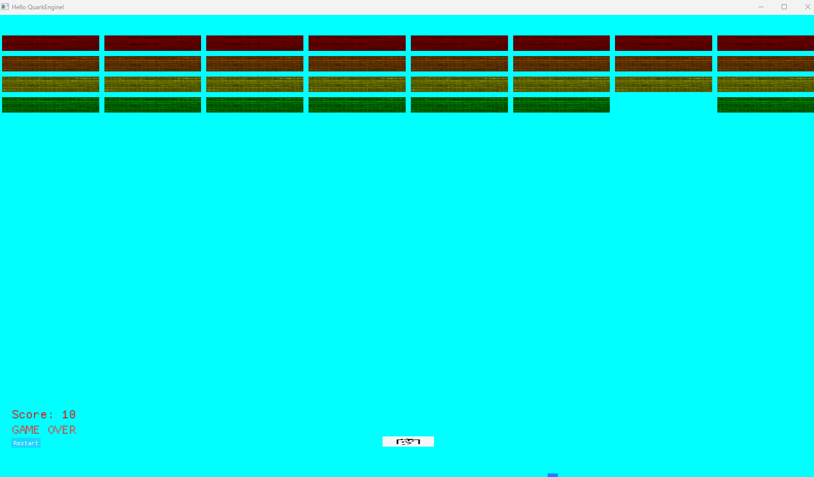

CMP301: Games Engine
A simple games engine designed and built in C++.
C++EngineGraphics

Overview
The engine brings together a bunch of libraries to create an engine for which simple 2D Games could be built. I built it to show my ability to design and develop a simple game engine. The brick breaker demo show cases all these elements working together.
What I built
- This engine was based around a static engine and Dynamic game, mainly using singleton classes for systems
- It used a Wrapper class for BGFX rendering with a rendering component on game object
What I learned
From this project i learned the complexities of bringing multiple libraries together and the thought and process that goes into the decisions for making a Game engine.